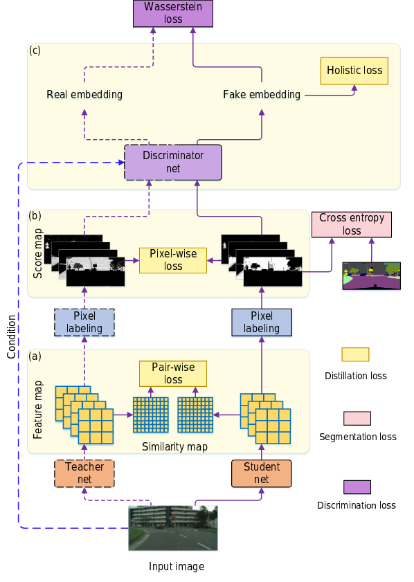
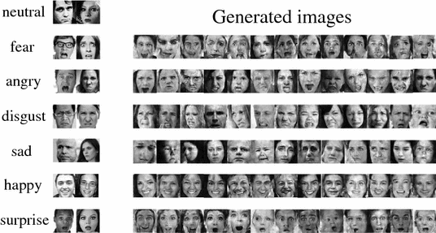
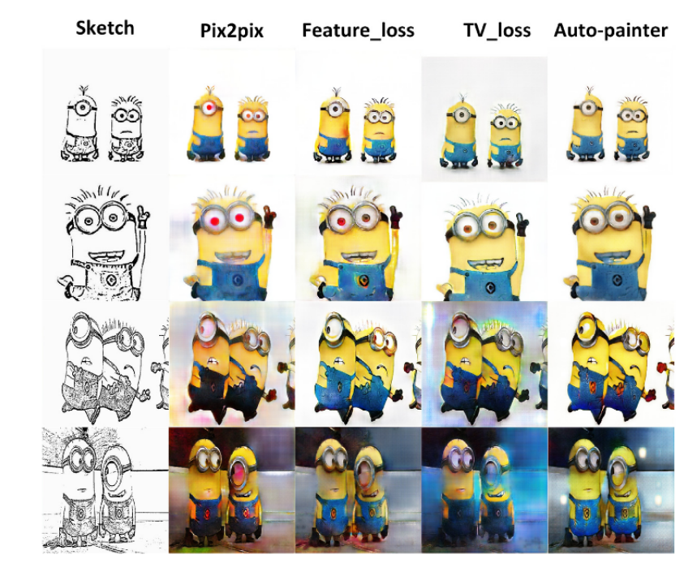
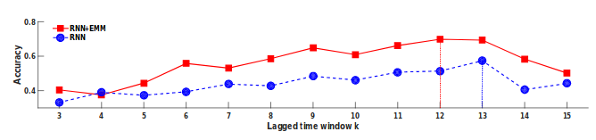
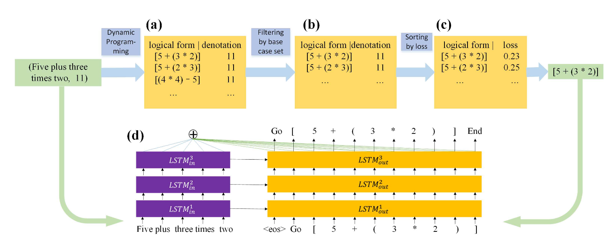

Publications


Pixel Level Data Augmentation for Semantic Image Segmentation using Generative Adversarial Networks
Shuangting Liu, Jiaqi Zhang, Yuxin Chen,Yifan Liu, Zengchang Qin, Tao Wan
IEEE International Conference on Acoustics, Speech and Signal Processing (ICASSP), 2019,[oral]
[PDF]
Shuangting Liu, Jiaqi Zhang, Yuxin Chen,Yifan Liu, Zengchang Qin, Tao Wan
IEEE International Conference on Acoustics, Speech and Signal Processing (ICASSP), 2019,
[PDF]




Logical Parsing from Natural Language Based on a Neural Translation Model
Yifan Liu*, Liang Li*, Zengchang Qin, Pengyu Li, Tao Wan
Conference of the Pacific Association for Computational Linguistics (PACLING), 2017[oral]
[pdf]
Yifan Liu*, Liang Li*, Zengchang Qin, Pengyu Li, Tao Wan
Conference of the Pacific Association for Computational Linguistics (PACLING), 2017
[pdf]
Professional activities
Journals
Neurocomputing
Conferences
Contests
- AI Edge Contest, on Semantic segmentation Rank: 3/90
- “ZhiYin maker” business plan competition, Rank: 2/207.
Awards
Friends
Zhi Tian (Adelaide Uni),
Tong He (Adelaide Uni),
Changqian Yu (HUST),
Ke Sun (USTC),
Yuhui Yuan (MSRA),
Last Updated on 11th Jul, 2019
Published with GitHub Pages